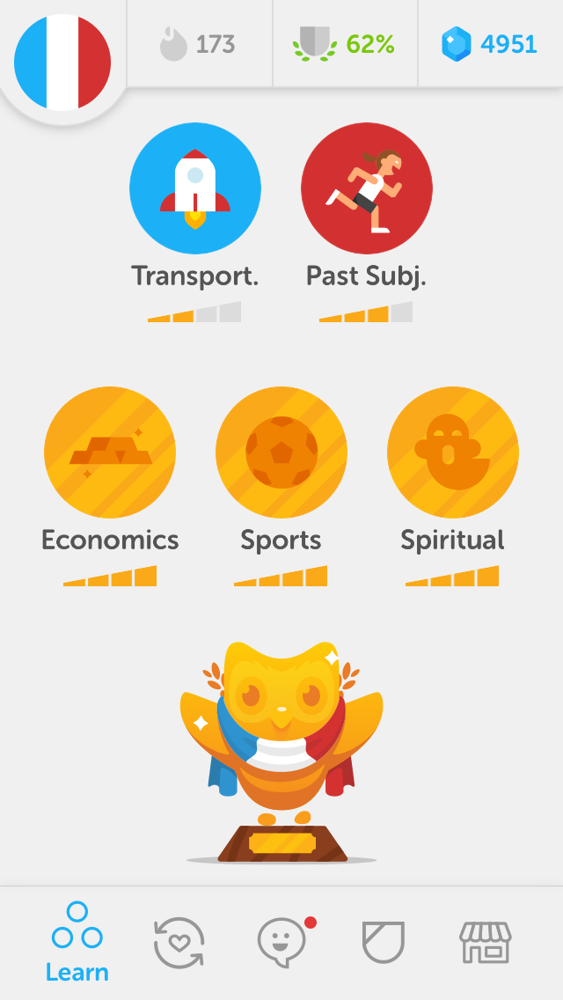

A Grande Idade Redonda
Li & Lê fizeram aniversário recentemente. Eles têm a mesma idade, e agora é uma idade de respeito. Qual será que é?
O que Torna uma História Interessante?
Com a pandemia e o excesso de tempo passado juntos, fica difícil termos histórias interessantes um para o outro. Mas afinal, o que torna uma história interessante? Angústia existencial, reflexões sobre amamentação, e muito mais, neste episódio de Oi Li. Oi Lê. Oi Lou.
Anotações do Episódio
Livro e filmes dos quais falamos neste episódio:
- I Am Malala, da Malala Yousafzai.
- Free Solo, do Alex Honnold.
- Onze Homens e Um Segredo.
Primeiras Semanas
Agora que o parto passou, nós percebemos que há um bebê em casa! Nós falamos sobre o ciclo da vida, da amamentação às trocas de fraldas.
Parto
O Lou nasceu! Nós contamos como foi.
Episódios da época em que ainda éramos só Li & Lê!
Carreiras
O bebê ainda não nasceu, então aproveitamos para refletir sobre o que estamos fazendo com as nossas carreiras. A Li parou de trabalhar e o Lê desistiu do doutorado, mas nós rejeitamos o título de desempregados 🙃
Maternidade e Machismo
A maternidade é uma experiência de empoderamento feminino, mas sempre há alguém pronto para encher o saco. Nós conversamos sobre o machismo que a Li teve que enfrentar até agora na gravidez e o que podemos fazer a respeito.
Plano de Parto
O parto do Lou será em breve! Nós conversamos sobre nossas expectativas.
Morte
A avó do Lê morreu. Talvez de coronavírus. Nós conversamos sobre a morte.
Anotações do Episódio
A Grande Mudança: Parte 2
Nós terminamos de contar como foi nossa mudança intercontinental de Baltimore (EUA) para Matosinhos (Portugal). Depois de muitas dificuldades, um final feliz!
A Grande Mudança: Parte 1
Nós começamos a contar como foi nossa mudança intercontinental de Baltimore (EUA) para Matosinhos (Portugal). Uma aventura no meio da pandemia, com dois gatos, muita bagagem, e tudo que poderia dar errado dando errado!
Anotações do Episódio
A medalha de honra do Lê: Ligações de até 8 horas com a Delta. Claro que foram necessárias muitas mais ligações para resolver todos os problemas da viagem, mas as ligações com a Delta foram as mais longas.
O caminho que deveríamos ter feito entre Paris e Sarlat.
Mais ou menos o caminho que o Lê e o pai da Li fizeram em 7 horas.
Mais ou menos o caminho que a Li e sua mãe fizeram em 12 horas.
Dia Internacional da Mulher
Nós conversamos sobre as mulheres da família da Li e sobre o papel da mulher nos dias de hoje.
Anotações do Episódio
O episódio em que falamos sobre assédio moral no trabalho.
Este episódio releva o tempo que levamos entre gravação e publicação, porque falamos de coisas de outros tempos que já não se faz mais, por exemplo, andar na rua 😷
Baltimore
Em breve nós iremos embora de Baltimore depois de termos morado aqui por seis anos. Nós relembramos os melhores lugares e damos dicas do que fazer.
Anotações do Episódio
O enfeite de árvore de Natal que nós compramos no fim da feira.
- A inspiração para este episódio foi o livro 111 Places in Baltimore That You Must Not Miss, da Allison Robicelli e John Dean.
- Desde a gravação deste episódio nós fomos conhecer o Broadway Market. Não é grande coisa…
- O filme que conta a história do cardiologista cuja pintura está perto de onde a Li trabalha se chama Something the Lord Made.
Gravidez
A Li está grávida! 👶 Nós conversamos sobre como estão sendo as primeiras 10 semanas.
Anotações do Episódio
-
Nós usamos o Fertility Awareness Method (FAM) como método contraceptivo durante anos, e ele funcionou bem. Nós aprendemos sobre o FAM no livro Taking Charge of Your Fertility, da Toni Weschler.
-
Nós estamos lendo juntos o livro Everything I Never Told You, da Celeste Ng, em que um dos temas centrais é como balancear a profissão e a família. Em um episódio anterior nós já falamos sobre Little Fires Everywhere, outro livro da mesma autora.
Morte e Como Foi Dar Aulas
Nós conversamos sobre a morte do gato da mãe da Li, e sobre como foi o primeiro semestre em que o Lê deu aulas.
Anotações do Episódio
Neste episódio nós falamos sobre os livros Man’s Search for Meaning, do Viktor Frankl, e The Fault in Our Stars, do John Green.
Visita da Mãe e Choque Cultural
Nós conversamos sobre como foram as duas semanas em que a mãe da Li nos visitou, e sobre o choque cultural que uma amiga do Lê está sofrendo depois de ter se mudado do Brasil para a Europa.
Anotações do Episódio
Atualização: Ao que tudo indica, a amiga do Lê voltou a morar no Brasil.
Correndo com Estranhos
Nós conversamos sobre corridas e sobre alguns livros que lemos, principalmente Talking to Strangers, do Malcolm Gladwell.
Anotações do Episódio
Também falamos sobre os livros A Piada Infinita, do David Foster Wallace, e Scott Pilgrim e Seconds, do Bryan Lee O’Malley.
Ecochatos
Nós conversamos sobre espetáculos da Broadway e sobre como tentar fazer a coisa certa nos torna chatos.
Anotações do Episódio
- O Fantasma da Ópera realmente é antigo, mas não tanto assim: 1986.
- O livro do Alex Honnold que o Lê leu se chama Alone on the Wall.
- O Lê gosta mais de produções independentes, tipo as da Baltimore Rock Opera Society, do que dos espetáculos da Broadway.
- O lugar favorito do Lê para comida é o Cinnaholic. Não fomos lá no aniversário dele 😕
Season Premiere da Segunda Temporada
Nós celebramos o aniversário de um ano de Oi Li. Oi Lê. 🎉 Completamos a recapitulação do hiato de dois meses que começamos no episódio anterior e contamos como foi nossa viagem à Ocean City.
Anotações do Episódio
- O episódio sobre Brown do qual o Lê falou.
- Notando Nossa Própria Hipocrisia: Nossa máquina de lavar é do lado no nosso quarto. Mas acho que viveríamos igualmente bem se ela estivesse a um ou dois lances de escadas de distância.
Assédio Moral no Trabalho
A Li sofreu assédio moral no trabalho dela. Nós conversamos sobre como foi e sobre o que fazer a respeito.
Anotações do Episódio
- Episódio sobre a Elizabeth Holmes, uma sociopata que virou CEO.
- Episódio sobre a Brown, para a qual o Lê decidiu não ir e com isto provavelmente evitou assédio moral.
- Episódio sobre satanismo, que nada tem a ver com o mal.
The Act
Nós conversamos sobre The Act, o seriado baseado na história real da Gypsy Rose Blanchard, que era vítima de Síndrome de Münchhausen por procuração por parte da mãe, a quem ela acabou por matar. Contém spoilers e descrições de cenas perturbadores de um crime real.
Anotações do Episódio
- Episódio sobre a doida da Elizabeth Holmes e a Theranos
- O poema que o Lê mencionou é o This Be The Verse, do Philip Larkin, que ele conheceu através do Little Fires Everywhere.
- O caso do desaparecimento da Madeleine McCann, que aconteceu no Algarve, onde a Li morava.
Satanismo
Nós conversamos sobre o documentário Hail Satan?, que trata do The Satanic Temple e das suas implicações na justiça, moral, religião, arte, e política.
Anotações do Episódio
- Os sete mandamentos do The Satanic Temple, que combinam com o nosso senso de moral.
- O episódio em que falamos sobre veganismo.
- O Lê lembrou certo, a frase era do René Descartes, e aparece no Discurso sobre o Método: “O bom senso é a coisa do mundo mais bem distribuída: todos pensamos tê-lo em tal medida que até os mais difíceis de contentar nas outras coisas não costumam desejar mais bom senso do que aquele que têm.”
- Nós falamos sobre O Mundo de Sofia ao longo de vários episódios, por exemplo, do episódio sobre religião.
Desenho de coelho que a Li coloriu. Nós não falamos sobre ele no episódio, mas fica aqui como uma continuação dos desenhos que a Li está colorindo.
Miami
Nós conversamos a respeito da nossa viagem à Miami: nós fomos à praia, o Lê refletiu a respeito da sua identidade nacional, e mais.
Anotações do Episódio
A praia e as algas.
Um item interessante do bairro artístico, Wynwood.
Irmãs
O Lê tem notícias domésticas bombásticas!
Anotações do Episódio
- Episódio sobre Eleições no Brasil, em que nós falamos sobre nossas relações com nossas famílias.
- O Complexo de Édipo ao contrário, em que a filha quer ficar com o pai, tem um nome: Complexo de Electra.
- A Mallu Magalhães e o Marcelo Camelo começaram a namorar em 2008, quando ela tinha algo perto de 16 anos e ele perto de 30. Em 2015 eles tiveram uma filha.
- Episódio sobre filhos.
Racismo
Nós conversamos sobre racismo depois de termos assistido ao filme BlacKkKlansman.
Anotações do Episódio
- O termo euro-americano existe. As pessoas não usarem este termo é mais uma evidência de como a linguagem pode ser preconceituosa.
- O Lê falou um pouco do livro que ele está lendo, Educated, da Tara Westover.
Empreendedorismo
Nós conversamos sobre as estranhezas da cultura de empreendedorismo e do Vale do Silício, e sobre a ascensão e queda da Theranos e da sua fundadora, a Elizabeth Holmes.
Anotações do Episódio
- A conversa foi inspirada por um livro que o Lê leu, Bad Blood: Secrets and Lies in a Silicon Valley Startup, do John Carreyrou, e por um documentário da HBO que nós assistimos juntos, The Inventor: Out for Blood in Silicon Valley.
- Outro exemplo de empresa ridícula do Vale do Silício que nós mencionamos no episódio é a Juicero, cuja criação produtizada era uma suqueira de $ 400 que podia ser substituída pelas mãos!
- Por último, eis a versão brasileira de empreendedorismo que causa vergonha alheia: a Zebeleo.
O desenho que a Li coloriu. Compare com o desenho anterior e veja o progresso.
Uma das primeiras fotos que o Lê tirou com a câmera nova. Ela faz magia, nem precisa de fotógrafo!
Filhos
Nós conversamos sobre ter filhos: razões para ter, razões para não ter, em qual época da vida ter, nomes, e tudo o mais.
Procrastinação e Idiomas
O Lê teve uma semana bem pouco produtiva, em que ele passou bastante tempo vendo avaliações de câmeras que ele não vai comprar. Nós conversamos sobre procrastinação, sobre a pressão de ser cada vez mais produtivo, e sobre idiomas.
Anotações do Episódio
- A máquina de escrever digital se chama Freewrite.
- O Andrew Huang é um dos YouTubers favoritos do Lê.
- O John Green falando que criar uma comunidade positiva é a coisa mais importante que a nossa geração pode fazer no The Anthropocene Reviewed.
- O streak do Lê no Duolingo de francês foi de só 173 dias:

Brown e Providence
Nós conversamos sobre a teaching talk do Lê na Brown, sobre nossa viagem à Providence, e sobre nossa visita à Harvard & MIT.
Anotações do Episódio
- Um de nossos desenhos animados favoritos, Family Guy, se passa em Quahog, que é um bairro fictício de Providence. Da janela do nosso hotel nós víamos o skyline que aparece no desenho.
- Atualização importante: Nós comemos mais do melhor bolo de chocolate do mundo depois da gravação deste episódio. Duas fatias. Dizer não para uma Ivy League foi fácil em comparação com dizer adeus para aquele bolo.
- O episódio sobre como nos conhecemos conta mais da história do leap of faith do Lê em 2014, na esperança de algo melhor aparecesse. E algo apareceu: a Li.
Religião
Nós contamos como foi o fim da história dos gatos, a Li contou como foi o drill da unidade de bio-contaminação, e falamos sobre filosofia e religião.
Anotações do Episódio
- O motivador da nossa conversa foi O Mundo de Sofia.
- Correção: Os dentes-de-sabre não foram domesticados, como o Lê falou; eles foram extintos!
- O livro sobre religião que o Lê falou é o Deus, Um Delírio.
- Não acredite em qualquer estatística que você encontra por aí.
Pintura, Machados e Móveis
Nós falamos sobre nosso primeiro quadro em tinta a óleo sobre tela, sobre eventozinhos corporativos, e sobre como serão nossos móveis agora que a roommate se mudou e a casa ficou quase vazia.
Anotações do Episódio
A versão original do quadro de lontra.
As nossas versões.
- O episódio sobre Glamping, em que falamos sobre os dias que passamos na floresta, para os quais o Lê só levou um par de meias!
- O episódio com o Meio Clube do Livro anterior, sobre Little Fires Everywhere.
- No episódio de hoje, falamos sobre O Mundo de Sofia, e The Hate U Give. E também mencionamos The Help, To Kill a Mockingbird, e The Immortal Life of Henrietta Lacks.
Roommates
Nossa roommate se mudou! Nós relembramos nossas histórias com colegas de casa. Agora somos só Li & Lê & Ca (o gato); colegas de casa nunca mais!
Anotações do Episódio
A versão final do desenho que a Li coloriu. Veja a evolução desde a versão anterior.
Little Fires Everywhere
Nós contamos o que aconteceu com o teaching statement do Lê e fazemos um clube do livro sobre Little Fires Everywhere.
Anotações do Episódio
- Nós conhecemos Little Fires Everywhere através do John Green, quando ele estava lançando Turtles All the Way Down (Tartarugas Até Lá Embaixo).
- As séries de que falamos: You, que poderia ser o tema de um futuro clube do seriado; e Cuckoo, a comédia que a Li está assistindo.
Educação
O Lê precisa escrever um teaching statement. Nós refletimos juntos sobre o que faz um bom professor e qual é a melhor filosofia de ensino.
Anotações do Episódio
Filmes, Televisão, e Livros
Nós conversamos sobre o nosso réveillon, e sobre filmes, televisão, e livros.
Anotações do Episódio
O desenho que a Li está colorindo. Ela melhorou bastante desde o episódio anterior.
- A Lully de Verdade falando sobre Os Clássicos Obrigatórios do Cinema. Nesta série ela fala sobre Cidadão Kane e sobre O Encouraçado Potemkin.
- Crash Course Philosophy. Esta série de vídeos discute como nós reagimos à ficção (e sobre vários outros assuntos).
Uma lista de todos os filmes, séries e livros que nós mencionamos:
- Cidadão Kane
- Desventuras em Série
- The Apartment
- When Harry Met Sally…
- Encontros e Desencontros
- 2001: Uma Odisséia no Espaço
- O Encouraçado Potemkin (não ancoradouro, como o Lê falou no episódio)
- A Lista de Schindler
- O Labirinto do Fauno
- O Menino do Pijama Listrado
- The Zookeeper’s Wife
- O Diário de Anne Frank
- The Help
- O Conto da Aia
- Metropolis
- Nosferatu
- Independence Day: Resurgence
- Gilmore Girls
- Desperate Housewives
- Eragon (a Li está lendo (ou não) o último livro da série, Herança)
- Todos os livros e filmes do Dan Brown
- Black Mirror
- Laranja Mecânica
- O Iluminado
- De Olhos Bem Fechados
- Pulp Fiction
- A Maldição da Residência Hill
- Um Lugar Chamado Notting Hill
- Seinfeld
- Dracula
- Harry Potter
- Looking for Alaska
- O Senhor dos Anéis
- Paper Towns
- Pretty Little Liars
- Lost
Retrospectiva 2018 e Resoluções de Ano Novo
Nós relembramos 2018 e fazemos planos para 2019. Este é o nosso décimo episódio!
Anotações do Episódio
O cachorro (meio) pintado pela Li.
E o pássaro pintado pelo Lê. Ainda temos muito para aprender! E aqui está uma pessoa na internet para provar que o problema não são nossos lápis de cor.
-
Receitas de Roupa Velha e Paella aprovadas por nós. O Lê experimentou pela primeira vez açafrão de verdade, na paella, em vez de açafrão-da-terra.
Um Vegano no Churrasco de Natal
O Lê é vegano; a Li não. Nós conversamos sobre como é ser vegano sem ser chato, principalmente nesta época de perus de Natal.
Anotações do Episódio
-
O Lê lembrou certo: o marciano de Um Estranho Numa Terra Estranha, de Robert A. Heinlein, promove uma forma de canibalismo conhecida como endocanibalismo. Talvez até seja vegano, mas o Lê está fora. A Li também estava certa, canibalismo pode fazer mal à saúde.
-
A definição de flexitariano (ou semi-vegetariano) não diz onde omnívoro termina e flexitariano começa. Desde que o consumo de carne seja ocasional, está valendo. Sendo assim, a Li é flexitariana.
-
Carl Sagan disse “if you wish to make an apple pie from scratch, you must first invent the universe” no episódio 9 de Cosmos, The Lives of the Stars.
-
A cisticercose pode ser transmitida pelo consumo de carne de porco mal cozida, e este é um dos motivos pelos quais a carne de porco foi banida por algumas religiões, por exemplo, o judaísmo.
-
E. Coli não causa cólera, mas causa vários problemas gastro-intestinais, por exemplo, diarreia. Recentemente houve um surto de E. Coli na alface aqui nos Estados Unidos, mas por enquanto nenhuma religião proibiu saladinha.
Como nos Conhecemos
Nós nos conhecemos numa sexta-feira treze cinco anos atrás. Agora comemoramos lembrando como foi.
Anotações do Episódio
- O motivo pelo qual o Lê gosta de cabras.
- Couchsurfing: O site que promoveu o encontro no qual nós nos conhecemos.
- De acordo com o mapa, o Lê caminhou cinco horas no dia em que ele conheceu a Li.
- A rua em que as pessoas vão fazer compras em São Paulo é a Oscar Freire.
Doutorado
O Lê está perto de concluir o seu doutorado no exterior. Nós conversamos sobre como ele decidiu entrar nesta, como é o dia-a-dia de um doutorando, e como o doutorado influenciou sua família.
Anotações do Episódio
O chocolate que a Li ganhou de presente. É um esquilo pensando em chocolate — a coisa mais fofa!
Os motivos para o Lê escolher linguagens de programação como assunto do seu doutorado: Understanding Computation e Y Not: Adventures in Functional Programming.
Amizades e Tecnologia
Nós conversamos sobre os motivos que nos fazem querer acabar com uma amizade, e sobre vício em tecnologia.
Anotações do Episódio
- Nós temos obrigação moral para com a família (e, em particular, para com os pais)? O Lê acha que não.
- DuckDuckGo, um buscador alternativo ao Google que respeita a privacidade.
- Games Done Quick, a fonte dos vídeos em que o Lê é viciado. Speedruns são jogadores profissionais acabando os jogos o mais rápido possível.
- Downtime, um recurso dentro do Screen Time, do iOS 12, é uma resposta da Apple para o nosso vício em tecnologia.
- Alguns recursos a respeito de vício em internet.
Obsessões e Viagem com Gato
Nós conversamos sobre nossas obsessões. O Lê dorme e acorda em horários simétricos; a Li conta como foi trazer um gato do Brasil para os Estados Unidos. Nós estamos descobrindo para onde vamos no ano que vem, e a Li compartilha o que ela aprendeu sobre validação de diploma de farmacêutica na Europa e no Canadá (em resumo, é bem difícil).
Anotações do Episódio
A simetria no relógio. Acordar às 04:00, ter a metade do dia acordado às 12:00, ir dormir às 20:00, e ter a metade da noite de sono às 00:00.
Os livros da Basecamp, que falam sobre ser bem sucedido sem ter que trabalhar horas demais.
Esclarecimento Importante: Pagers podem usar a rede de telefonia celular, mas também podem usar uma rede especial para pagers. Esta rede especial usa satélites e rádios que cobrem uma área bem maior, onde a telefonia celular não chega. É por causa desta resiliência que os profissionais de saúde ainda usam pagers. A contrapartida é que esta rede especial não suporta trafegar muita informação de uma só vez, e é por isto que ela não é usada para telefonia ou internet.
Eleições no Brasil
Nós fomos para Washington para o Lê votar para presidente do Brasil no segundo turno de 2018. Logo antes da apuração dos votos, nós aproveitamos os últimos momentos de esperança.
Anotações do Episódio
Aniversários
O Lê está fazendo X anos! Nós conversamos sobre aniversários e influencers da internet.
Anotações do Episódio
Nós gravando este episódio, com um gato no colo, e um bolo. Desenhado a quatro mãos.
- Ouça Shop Vac, do Jonathan Coulton.
- Uma arroba (15 quilos) de alfarrobas custa a partir de R$ 750.
- The Woodstock Fruit Festival, que a Li tem vontade de ir por causa dos influencers, mas ainda não foi.
Glamping
Nós fomos glamping (glamour + camping). Caminhamos no meio da floresta, conhecemos gente mais ou menos, e quebramos um banco!
Anotações do Episódio
Nós quebramos este banco na primeira tentativa de gravar o podcast.
Onde conseguimos gravar o podcast — cada um em seu banco.
As botas da Li.
A Li assustou os veadinhos com o flash (sem querer) para tirar esta foto.
Correção: De acordo com o squirrelnutrition.com, esquilos não hibernam. Céus, squirrelnutrition.com — se alguém entende de esquilos são estes caras. squirrelnutrition.com, a internet nunca deixa de me surpreender. De toda forma, esquilos passam um bom tempo sem fazer quase nada. Nós nos identificamos.
Dia da Farmacêutica
No primeiro episódio de Oi Li. Oi Lê., nós conversamos sobre como é ser farmacêutica e analista clínica em vários lugares do mundo.
Anotações do Episódio
A Li trabalha em hematologia.
A Li já trabalhou no Brasil, fez um estágio na Espanha, e hoje trabalha nos Estados Unidos.